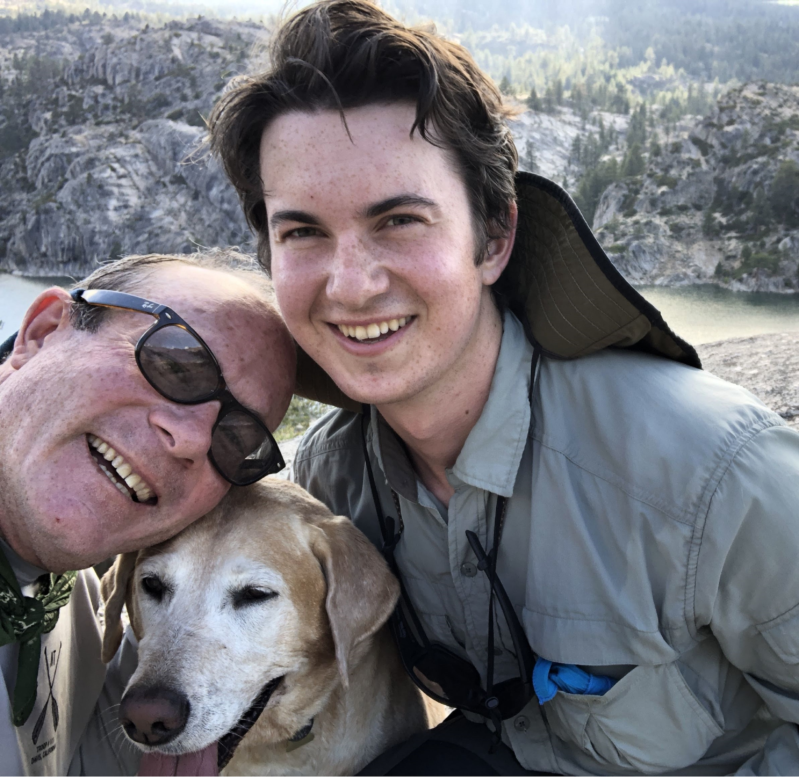
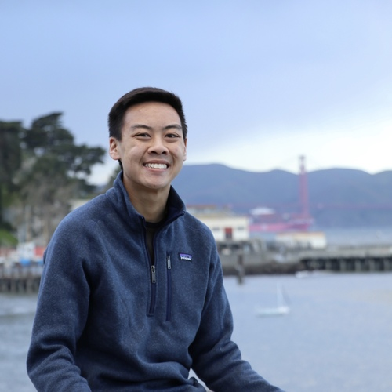

Staff
Instructors¶


Teaching Assistants (uGSIs)¶
|
Adele Bloch (bio) I am a senior at UC Berkeley double majoring in Data Science and Business. I have been on staff for 5 semesters now, and I am so excited for Data 8 this year. In my free time, you can find me running, hiking, singing, and finding new places to eat around Berkeley!
adele.bloch@berkeley.edu
|

Aidan De Angelis (bio) I'm a 4th year Computer Science major from Davis, CA. I took Data 8 my Fall semester freshman year and I absolutely fell in love with it. In my free time I like to hike, play paintball, and scope deals on Craigslist. I hope you learn to love Data 8 just as much as I do and I'm stoked to meet you all!
aidandeangelis@berkeley.edu
|
 Ananya Krishnan (bio) Hey! I am a junior studying cognitive and data science from sunny San Diego. I am interested in learning about cognitive processes and decision making with modeling and data. In my free time, I enjoy watching TED Talks, going on hikes, attempting to bake, and eating lots of ice cream. I am excited to be part of the Data 8 staff this year and hope to meet you this Fall!
ananya.krishnan@berkeley.edu
|
|
 Angela Guan (bio) My name is Angela Guan, and I'm a Junior studying Data Science and Economics. I'm from San Jose, California. I loved Data 8 in my first semester at Cal, and I have been part of Data 8 since. I am on the Cal table tennis team, and I have traveled to every continent (except Antarctica). Some of my hobbies are baking, hiking, traveling, and learning new languages. Excited to meet you!
guanangela@berkeley.edu
|
Anna Burns (bio) I am a senior majoring in Data Science with an emphasis in Industrial and Business Analytics. I have been a part of Data 8 for the past five semesters and it is still one of my favorite classes. I'm from a small town in the NorCal foothills and love being out in nature. I also like cooking and baking and of course Data 8!
anna.burns@berkeley.edu
|
Annie Nguyen (bio) One summer, I lived on a farm in Hawaii and made friends with flat earthers. Yup!
vienannguyen@berkeley.edu
|
 Ashley Quiterio (bio) Hey everyone! I'm a junior majoring in Data Science, and I hope to use what I learn to make a social impact. I'd love to talk about how to use DS in different contexts. I look forward to getting to know y'all!
ashleyquiterio@berkeley.edu
|
 Austen Zhu
austenzhu@berkeley.edu
|
 Avery Yip (bio) I too like to stalk my GSI's profile. Feel free to shoot me an email or come talk to me if you have any data 8 questions :)
averyyip@berkeley.edu
|
 Caroline Chen
carolinejchen@berkeley.edu
|
 Colby Lewis (bio) This semester I'm trying to convince myself that managing stress is FUN. When I'm not taking or working for class I like to cook, listen to podcasts, and have friends over for board game nights. Sometimes the podcasts spill over into class time.
colbylewis2020@berkeley.edu
|
 Deven Barth
devennb@berkeley.edu
|
 Emily Zou
emilykzou@berkeley.edu
|
George Nacouzi
gnacouzi@berkeley.edu
|
 Gregory Du (bio) Hello, my name is Gregory. I'm a junior Computer Science major and I'm a really big fan of Pixar movies and 3D Graphics, cooking, looking at ~aesthetic~ PC builds, and that feeling you get when you're really thirsty and you drink a cool, crisp glass of water (flat not sparkling).
gregoryd2017@berkeley.edu
|
|

Gregory King (bio) Hey everyone! I'm a third year Economics major from the LA area. Outside of this class, I love watching stand up comedy, listening to podcasts, or binging HBO shows!
gregking22@berkeley.edu
|
Hubert Luo (bio) Hi! I'm a fourth year from Toronto studying statistics and applied math, with a concentration in data science. I'm interested in applied statistics in connection with finance and political science. On campus, I'm part of Berkeley Model United Nations, an educational non-profit which organizes the oldest Model UN conference in the world and the largest on the west coast with 2,000+ delegates.
hubertluo@berkeley.edu
|
 Ian Castro
castro.ian@berkeley.edu
|
 Irene Wang (bio) I am a third year statistics and economics major from San Diego. I enjoy watching movies, hanging out with friends, and sketching. I can't wait to teach data 8 to you this fall!
irenerwang@berkeley.edu
|
 Jifu Li (bio) Hey y'all! I'm a third year MCB and Nutrisci major from Jacksonville, Florida (Go Jags!). I like playing and watching sports, and since this is fall semester you will probably find me constantly checking my fantasy football app. Feel free to reach out to me about how my team is doing.
jifu.li@berkeley.edu
|
 Juliann Nguyen (bio) Hi! I'm a senior studying Statistics. When I have some free time, I enjoy tv show binging and seeing dogs in real life, photos, or videos. I'm super excited to be on staff this semester and am looking forward to working with you all!
juliannnguyen@berkeley.edu
|
 Katherine Tsai
katherinetsai@berkeley.edu
|
 Krista Hayakawa
keh7@berkeley.edu
|
 Lillian Louie (bio) Hi everyone! I'm a senior majoring in data science. It's my third time teaching Data8, and I am super excited to be back in the fall. You can probably find me at a coffee shop either catching up on homework or watching my daily dose of korean dramas. Data8 has definitely changed my college experience, and I hope you'll enjoy the class as much as I did!
lillianlouie@berkeley.edu
|
Logan Ritter (bio) I am a third year majoring in CS (possibly a Data Science minor). I was born and raised in Ohio but Cal is a long time family school. I used to play disc golf competitively and play Ultimate Frisbee at Cal. Outside of school, I enjoy biking, hiking, and video games.
lritter@berkeley.edu
|
 Maya Rao (bio) Hi, I'm Maya! I'm a fourth-year Political Economy major and Russian minor from (the best city in the whole world) San Diego, CA. In my free time, I love watching truly trashy TV, reading biographies of Tudor monarchs and reminding everyone I studied abroad in London. I've been involved with Data 8 since my freshman year and I'm super excited to get to know all of you!
mayarao@berkeley.edu
|
Olivia Lewke
olivialewke@berkeley.edu
|
|
Oscar Syu (bio) Hi! I'm Oscar and I'm a senior studying Data Science and Economics. I'm excited to be back for my 5th semester on staff and 2nd as a uGSI! I'm really interested in how data can drive business decisions in addition to the potential impact data can have on public and social sectors. Outside of school, you can find me running, trying out new AC Transit routes, and bricking open 3-pointers at the gym. I'm looking forward to meeting you all!
oscar.syu@berkeley.edu
|
 Parham Rouzbahani (bio) I'm an incoming Business-Data Science loving junior from Toronto, Canada, eh? I'm a huge fan of dogs, board games, travelling and snow.
parouz@berkeley.edu
|
 Ravi Singhal (bio) Hello! I am a senior majoring in Data Science and minoring in Computer Science. I love sports and am a passionate basketball fan. This is my fifth semester being a uGSI for Data 8 and my second being one of the leads. I am super excited to be a part of this amazing class again!
ravi.singhal@berkeley.edu
|
 Rohan Narain
narain.rohan@berkeley.edu
|
|
Roshan Srinivasan (bio) Hey y'all. I'm a junior studying IEOR. I'm originally from SoCal and love spending time at the beach. I'm also a big foodie and love trying new cuisines. Definitely a huge fan of sushi and ramen! Also love drinking really expensive tea (yikes)!
roshansrin01@berkeley.edu
|
Saurav Mittal (bio) Hey! I'm a 3rd year EECS major from India. I'm super excited to be one of the TAs this semester. I took Data 8 in my first semester here, and I've been in love with it ever since. I hope you all enjoy the course as much as I did!
saurav@berkeley.edu
|
||
 Steven Singorahardjo (bio) Hi there! I'm in my fourth year here at Cal studying Business Administration. Outside of class, I enjoy taking photos, building websites, and making coffee (fun fact: I took a barista course in Australia last summer!). I'm super excited to be back with the Data8 Staff and am looking forward to a fruitful semester with you all!
ssingorahardjo@berkeley.edu
|
 Tamara Vilaythong (bio) Hi! I'm Tamara/Tam, and I'm a third year Computer Science major from San Diego. Taco aficionado and I like weightlifting. I absolutely loved taking Data 8, and this is my second semester being a uGSI! Looking forward to meeting all of you!
tvilayth@berkeley.edu
|
 Vikram Chandran (bio) Hey everyone! I'm a chocolate volcano and ping pong lover who watches too much Netflix & HBO. The Dark Knight is my favorite movie of all time. I'm also a competitive swimmer!
vikramchandran@berkeley.edu
|
 Winifred Chung (bio) Hello hello! I'm a third year Data Science major from sunny San Diego. I love spending copious amounts of time at the beach, getting lost in nature, curating Spotify playlists, and impulsively buying concert tickets. Hope you enjoy this class just as much as I did, and I look forward to meeting you! :)
winifredchung@berkeley.edu
|
|
Yanay Rosen (bio) I am a third year majoring in Computer Science. I was born in Israel but grew up in the suburbs around Boston. This is my second semester as a uGSI, fifth semester on staff, and I also help develop the online version of Data 8, Data 8x. I love Data 8 and hope you will too!
yanayrosen@berkeley.edu
|
 Yash Swarup Agarwal
yashswarup@berkeley.edu
|
 Youmna Rabie (bio) Hi all! My name is Youmna, and I'm a senior studying Computer Science and Economics. I'm your Head Tutor for this semester, and I absolutely can't wait to meet all of you! Data 8 has been my favorite class at Cal by far. In my free time I enjoy rock climbing and baking!
youmnarabie@berkeley.edu
|


Tutors¶